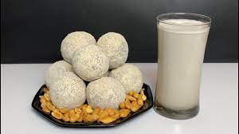
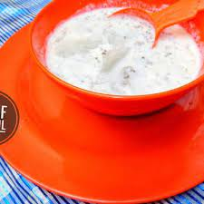
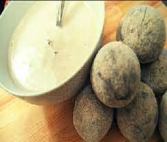

FURA AND NONO DRINK RECIPES

Fura and Nono
In the northern part of Nigeria, Fura da Nono is quit common. It's simply a combination of fermented cow milk with ground millet miixed with a host of other ingredients and spices e.g ginger, clove etc.
Ingredients
- 1/2 cup soya bean meal
- 1/2 cup of millet or guinea corn meal
- 1 tea spoon of dried pepper (grounded)
- 1/2 tea spoon of clove (grounded)
- 1 tea spoon of dried ginger (grounded)
- 1 tea spoon of corn flour
- 2 ltrs of water
- 1 ltr of fresh cow milk
- granulated sugar (Optional)
Fura Preparatuion
- Mix a dry flour and spices together by adding a substantial amount of water just to bind them. Mold into a size of your choice
- Wash the millet and combine it with 1 cup of water, add in the spices and puree in a blender until very smooth (you can choose to briefly soak the millet in hot water for about 5 minutes to make blending easier)
- Pour pureed millet into a pot, place on low-medium heat and stir until a dough forms.
- Add in nono (kafir) and gently mash millet dough. Add sugar to taste. Serve cold
- Add 1 tablespoon of water to the millet dough, reduce heat to minimum and simmer for another 5 minutes
- Scoop millet dough into a bowl and set aside to cool
-

-
